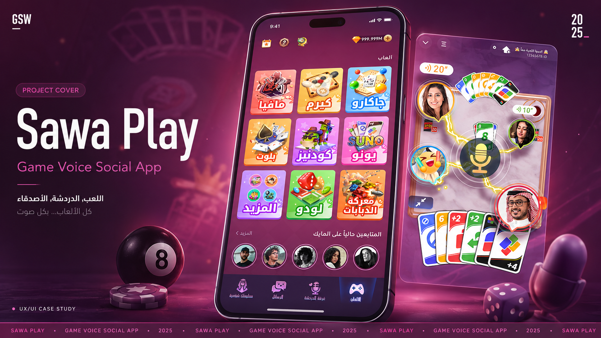

APP Design × User Insight
Sawa Play 体验基线与用户洞察报告
Sawa Play 是一款面向中东海湾地区用户的、由休闲游戏驱动的多人语音社交产品。
它的核心竞争力并不只是“拥有游戏和语聊两类功能”，而是通过游戏为陌生人提供明确、低压力的共同任务，让用户先一起玩、观察和识别彼此，再逐渐形成关注、复玩、聊天、房间关系及送礼行为。
开始游戏 → 产生共同经历 → 识别合适的人 → 关注或再次共玩 → 进入语聊和长期关系 → 产生关系型消费
当前影响业务增长的核心问题，并不是用户缺乏社交意愿，而是这条链路中的多项体验承诺尚未稳定兑现：用户不一定能顺利开局、无法提前判断房间状态、游戏关系容易流失、语聊秩序和安全感不足，基础稳定性及付费回报也存在不确定性。
产品下一阶段应从“增加功能和入口”转向“提升共同游戏关系的形成效率”，优先解决基础信任、关系沉淀和低压力语聊参与问题。
01｜产品定位
产品定位：休闲游戏驱动的多人语音社交平台。
体验定位：以游戏为切入点的低压力社交平台。
对用户而言，Sawa Play 提供的并非单纯小游戏，而是一个通过共同游戏寻找玩伴、建立联系和获得在线陪伴的场所。
对业务而言，游戏承担四层价值：
定位边界
Sawa Play 不是单纯的休闲游戏平台。游戏不仅用于完成一局娱乐，更用于让用户观察对方的技术、礼貌、性格和合作方式。
它也不是传统语音聊天室。陌生语聊要求用户先具备聊天动机，而游戏只要求用户完成“开始一局”这个明确动作，因此更适合作为社交起点。
同时，它不是以消费为起点的付费工具。消费应当是关系、身份或游戏价值得到确认后的结果，而不是依赖礼物入口和活动刺激独立发生。
02｜核心用户画像
从体验链路看，用户可分为四层。不同层级不是固定标签，用户可能长期停留在某一层，也可能在不同场景间反复切换。
游戏目标优先型用户
首要诉求是快速进入真人对局，遇到懂规则、不中途退出、能够稳定配合的玩家。他们并非拒绝社交，而是不愿让社交行为打断游戏目标。
游戏关系沉淀型用户
已经开始通过游戏识别人，关注对方通常是因为技术好、有礼貌、配合顺畅或相处轻松，是从游戏走向社交的关键桥梁。
语聊参与受阻型用户
已经进入过语聊房，但没有稳定开麦、关注他人或形成持续关系，需要先听、文字互动、被邀请后开麦等渐进式参与路径。
社交导向型及原有关系迁移用户
本身已有明确社交目的，或携带旧产品中的好友、房间和账号资产进入，更关注关系连续性、资产保留和熟人房间可找回。
横向安全视角
部分女性用户在公开语音环境中，对身份暴露、被要求证明性别、道德评价和低俗内容更加敏感。这不应被单独概括为一种用户画像，而应作为所有语聊场景中的安全设计维度。
产品需要避免强迫开麦，支持旁听和文字互动，强化房主管理，并提供有效的拉黑、举报和退出机制。
03｜用户诉求与核心体验问题
对大量用户反馈进行脱敏归类后，核心体验问题并非集中在某一个功能，而是围绕六项产品承诺持续出现。
用户能否顺利玩起来
游戏是整个社交链路的第一道信任。当前用户仍可能遇到匹配困难、房间进不去、白屏、掉线、被强制退出、玩家中途离场及房间实际状态与入口描述不一致等问题。
如果用户无法完成一次稳定对局，后续的识别人、关注、聊天和送礼均无从发生。
用户能否判断房间是否适合自己
当前房间入口更多展示人数、热度或“有人在麦上”，但这些信息不能回答用户真正关心的问题：房间正在游戏还是聊天，是否已经开局，是否有空位，是否欢迎陌生人，进入后可以旁听、加入游戏还是必须参与语聊。
游戏关系能否被保存和重新触发
关系问题主要表现为消息消失、好友邀请异常、历史玩家难以找回、状态展示不清晰，以及熟人和群体关系承接不足。
关系系统需要同时满足两个条件：用户能够找回想再次共玩的人，同时也能够控制自己的在线状态、身份信息和互动边界。
语聊是否安全、有秩序
治理、封禁、辱骂、冒犯和恶意举报是反馈中最集中的问题之一。用户不只是关心有没有人聊天，更关心举报是否真正有效、房主和管理员能否维持秩序、被误判后是否有清晰申诉渠道、自己能否不被迫开麦并随时退出。
语音和网络能否支持边玩边聊
声音异常、听不到、无法开麦、卡顿、进房失败和操作延迟，会被用户直接理解为“房间不好用”或“无法参与”。稳定性不是后台技术指标，而是产品能否建立社交信任的基础。
付费和权益是否有明确回报
不同用户对付费回报的理解不同。游戏用户关注投入是否改善游戏体验，关系用户关注礼物能否表达感谢、破冰或回礼，高价值用户关注等级、特殊身份、资产展示及服务权益。
商业化设计需要解释“为什么值得投入”，而不仅是“在哪里充值”。
04｜竞品体验基准
竞品分析显示，领先产品的优势并不只是功能更多，而是在关键体验承诺上更加稳定。
TopTop：综合游戏社交标杆
在熟人房间、语聊秩序、打赏氛围和社交关系连接方面更成熟。房间资料、管理员、进入权限和房间属性能帮助用户判断是否适合进入。
Jackaroo King：垂类游戏体验标杆
入口明确、玩法模式清晰、开局成本和匹配状态容易理解。它说明游戏要成为社交入口，首先必须是一款可信赖的游戏产品。
WePlay：多游戏和轻社交标杆
通过多样化游戏、持续奖励、成长体系和稳定语聊提升用户打开频率，游戏产生的好友关系可以自然进入更大容量的语聊场景。
Yalla Ludo：商业化参考
市场和畅销表现较强，可作为中东棋牌游戏商业化能力参照。由于专项访谈与体验材料仍需补齐，具体体验方案暂不直接套用。
Sawa Play 的市场位置
整体来看，Sawa Play 在下载声量、游戏稳定性、房间秩序、奖励感知和完整社交链路方面仍处于追赶阶段。它的潜在优势在于同时具备游戏、语聊和原有社交关系资产，但这些能力尚未被整合为足够稳定、连贯的用户体验。
05｜系统性诊断
基础信任不足
稳定性、登录、匹配、声音、封禁和申诉等基础问题出现时，用户会直接怀疑产品是否可靠，并同时损害游戏体验、语聊转化、关系资产和付费信任。
关系链路不完整
游戏房、语聊房、关注、IM、家族和礼物等功能虽然存在，但彼此承接较弱。产品需要从功能模块视角转向关系旅程视角。
过度聚焦最终转化
纯语聊转化率是体验承诺连续兑现后的结果。如果前置条件没有解决，过强的语聊引导反而可能增加流失和负面体验。
06｜体验优化优先级
第一优先级：修复基础信任
- 提升游戏、语音、进房及退出稳定性；
- 优化登录、账号找回和关系资产恢复；
- 明确封禁原因、规则依据和申诉进度；
- 提高举报结果和治理处理的可感知性。
第二优先级：打通游戏到关系的链路
- 降低新用户首次开局成本；
- 在进房前展示真实游戏状态、空位和进入条件；
- 强化局后关注、再来一局和历史队友；
- 展示关注对象正在玩的游戏及是否可以加入；
- 通过复玩和邀请，而非强制语聊，引导关系升级。
第三优先级：建立低压力语聊路径
- 支持先听、文字、公屏等轻参与方式；
- 弱化强制开麦和陌生人直接互动；
- 增加朋友陪同进入、熟人邀请和可信房间入口；
- 完善房主、主持人、管理员、静音和移除权限；
- 针对辱骂、逼麦、身份攻击等行为提供明确治理。
第四优先级：强化关系和身份资产
- 明确 Sawa 与 Sawa Play 的账号及关系承接；
- 提升好友、固定房间、家族及历史关系可找回性；
- 将礼物定义为感谢、破冰、回礼和身份表达工具；
- 明确等级、贵族、特殊身份和长期权益；
- 为高价值用户提供更稳定的服务和资产保障。
07｜体验度量建议
纯语聊转化率继续作为长期北极星指标，但需要增加过程指标解释转化发生或损耗的位置。
其中，共同游戏后七日有效关系形成率 可作为最重要的过程指标，用于衡量游戏是否真正从内容入口转化为关系入口。
08｜最终结论
Sawa Play 的核心增长机会，不在于继续将游戏和语聊作为两个独立模块扩张，而在于建立一条稳定的“共同游戏关系链路”。
游戏负责提供明确的进入理由和低压力破冰；关系系统负责保存值得继续互动的人；语聊负责承接更深的情绪表达和陪伴；房间、家族及身份资产负责维持长期关系；礼物和虚拟资产则负责表达关系并完成商业转化。
产品体验的最终判断标准不应只是用户是否进入了语聊房，而应是：
每一次共同游戏，是否提高了用户形成安全、可持续关系的概率。
只有先让用户顺利玩起来、看懂房间、留住合适的人，并在有秩序的环境中逐步参与语聊，纯语聊转化、长期留存和商业价值才可能获得稳定增长。